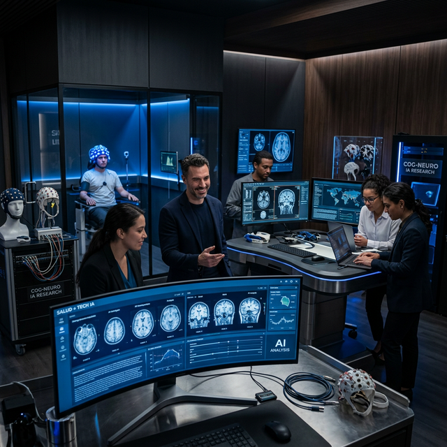

At the Systems Neuroscience & Neurotechnology Unit (SNNU), we bridge the gap between theoretical approaches in systems neuroscience and neurotechnological applications.
The SNNU belongs to the Medical Faculty of Saarland University and the Faculty of Engineering at the Saarland University of Applied Sciences. Our research sites are distributed across the Neurocenter of the Saarland University Hospital, the Technikum of htw saar, and the MediClin Bosenberg Rehabilitation Center.
We perform multidisciplinary research on multiscale systems neuroscience, quantitative neuromodeling, and neuroimaging, with a particular interest in neural correlates of attention and cognitive effort.
View PublicationsJoin our international lab network or propose a joint research initiative today.
Opportunities open for Ph.D. students and postdocs.